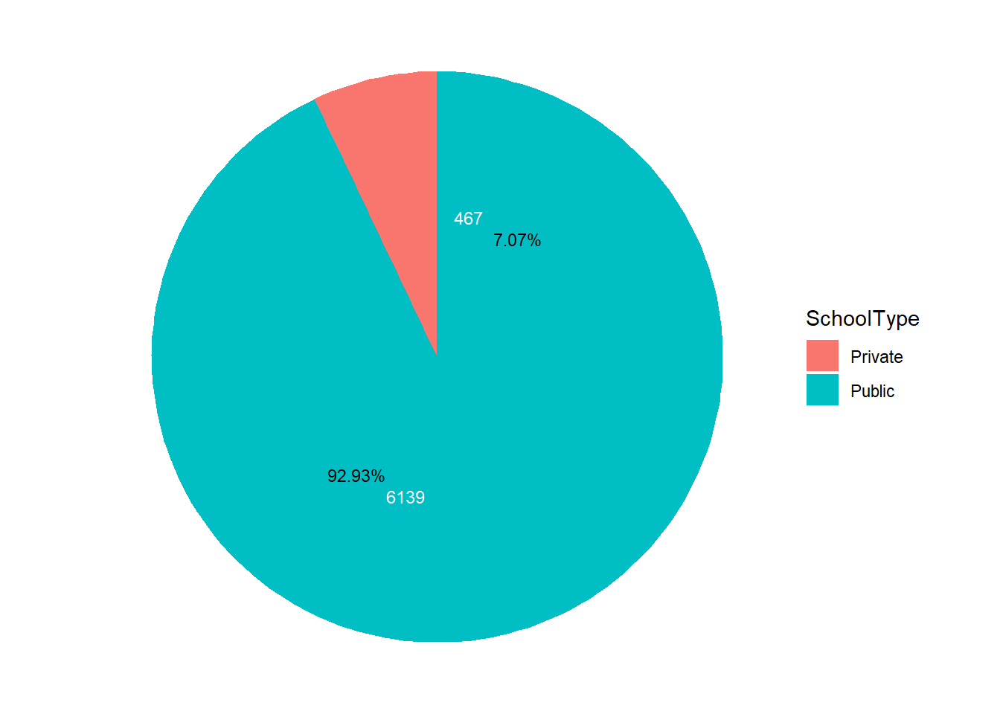

pacman::p_load(tidyverse, haven, patchwork,ggrepel,ggthemes, ggstatsplot, ggplot2, ggridges, performance, ggiraph)Univariate & Bivariate Analysis
Univariate & Bivariate Analysis
1. Overview
In this analysis, it will be break into two parts:
General visualization of student profile who fill in the questionnaire
EDA & CDA of related possible influential factors on students academic performance
2. Loading R package
3. Import data
dataset_filtered <- read.csv("data/stu_SG_filtered.csv")dataset <- read.csv("data/stu_SG_rcd.csv")4. Univariate Analysis
4.1 Student Profile: Know more about our participants
pie chart for gender, school type, home language
dataset_gender <- dataset %>%
count(Gender)
dataset_gender <- dataset_gender %>%
mutate(prop = n / sum(dataset_gender$n) *100,
n_pct = paste0(round(prop,2),"%"),
ypos = cumsum(prop)- 0.5*prop,
ypos_pct = case_when(ypos > 50 ~ ypos-4, ypos<= 50 ~ ypos+4)) ggplot(dataset_gender, aes(x="", y=prop, fill=Gender)) +
geom_bar(stat="identity", width=1) +
coord_polar("y", start=0) +
theme_void() +
geom_text(aes(y = ypos, label = n), color = "white", size=3) +
geom_text(aes(y = ypos_pct, label = n_pct), color = "black", size=3)
bar chart for immigration, home language, siblings, parents education
ggplot(data = dataset,
aes(x = Immigration)) +
geom_bar() +
geom_text(stat="count",
aes(label=paste0(stat(count), ", ",
round(after_stat(count)/sum(after_stat(count))*100, 1), "%")),
vjust=-0.5,
size=3) +
labs(x = "",
y = "",
title = "Immigration") +
theme(
plot.title = element_text(size=9, face="bold"),
panel.grid = element_blank(),
axis.text.y = element_blank(),
axis.title.y = element_blank(),
axis.ticks.y = element_blank(),
axis.ticks.x = element_blank(),
plot.background=element_rect(fill="white",colour="white")
) Warning: `stat(count)` was deprecated in ggplot2 3.4.0.
ℹ Please use `after_stat(count)` instead.4.2 Academic performance
# min, max, mean, median of the score
math_mean <- round(mean(dataset$Math),0)
math_median <- round(median(dataset$Math),0)
math_min <- round(min(dataset$Math),0)
math_max <- round(max(dataset$Math),0)
leftwhisk_math <- round(quantile(dataset$Math, probs = .25)-1.5*IQR(dataset$Math),0)
math_distribution <-
ggplot(
dataset,
aes(x = Math)
) +
geom_histogram(
bins = 25,
color = "#f5f5f5",
fill="#c7c8cc"
) +
scale_x_continuous(
breaks = scales::pretty_breaks(n = 5),
limits = c(150,950),) +
geom_vline(
aes(xintercept = math_median),
colour="#595DE5",
linewidth = 0.7,
linetype = "dashed"
) +
annotate(
geom = "text",
x = 660,
y = 870,
label = paste0("Median = ", math_median),
color="#595DE5"
) +
geom_vline(
aes(xintercept = math_mean),
colour="#e0218a",
linewidth = 0.7,
linetype = "dashed"
) +
annotate(
geom = "text",
x = 535,
y = 870,
label = paste0("Mean = ", math_mean),
color="#e0218a"
) +
labs(x = NULL, y = NULL
) +
theme_minimal() +
theme(
axis.text.y = element_blank(),
panel.grid.major = element_blank(),
plot.background = element_rect(fill="#f5f5f5",colour="#f5f5f5")
)
# Boxplot
box_math <-
ggplot(
dataset,
aes(y = Math, x="")
) +
geom_boxplot(
fill="#c7c8cc",
outlier.colour="#d18a7d",
outlier.shape=16,
outlier.size=1,
notch=FALSE
) +
stat_summary(geom = 'point',
fun.y='mean',
colour = '#e0218a',
size=4) +
coord_flip() +
#Annotate with amounts to show range
annotate(
geom = "text",
x = 0.5,
y = math_min,
label = paste0(math_min),
color = "#d18a7d"
) +
annotate(
geom = "text",
x = 0.5,
y = leftwhisk_math,
label = paste0(leftwhisk_math),
color = "#34414E"
) +
annotate(
geom = "text",
x = 0.5,
y = math_max,
label = paste0(math_max),
color = "#34414E"
) +
labs(
title = "Distribution of Math Scores Performance",
y = "",
x = ""
) +
scale_y_continuous(
limits = c(150,950),
) +
stat_boxplot(
geom="errorbar",
width=0.5
) +
theme_minimal() +
theme(
axis.text = element_blank(),
axis.ticks = element_blank(),
panel.grid.major = element_blank(),
plot.background = element_rect(
fill="#f5f5f5",colour="#f5f5f5")
)Warning: The `fun.y` argument of `stat_summary()` is deprecated as of ggplot2 3.3.0.
ℹ Please use the `fun` argument instead.hbox_math <- (box_math / math_distribution) +
plot_layout(heights = c(1, 2.5))
hbox_math & theme_void()
5 Bivariate Analysis
5.1 Time spend on homework & Academic performance
5.1.1 Distribution
ggplot(
dataset,
aes(x = Math,
y = Homework_Math,
fill = Homework_Math,
color = Homework_Math)
) +
geom_density_ridges(
# Adjust bandwidth to reveal variations
bandwidth = 15,
alpha = .6
) +
labs(
title = "Distribution of Math Score Across Time Length Spend on Math Homework"
) +
theme(
legend.position = "none",
axis.title.y = element_blank(),
panel.grid.major = element_blank(),
plot.background = element_rect(fill="white",colour="white")
)5.1.2 Normality Test
model1 <- lm(Math ~ Homework_Math, data = dataset)
check_n <- check_normality(model1)
plot(check_n)5.1.3 ANOVA
ggbetweenstats(
data = dataset,
x = Homework_Math,
y = Math,
type = "non-parametric",
mean.ci = TRUE,
pairwise.comparisons = TRUE,
pairwise.display = "s",
p.adjust.method = "fdr",
messages = FALSE
)Warning in min(x): no non-missing arguments to min; returning InfWarning in max(x): no non-missing arguments to max; returning -Inf5.2 Exercise time & Academic performance
5.2.1 Distribution
ggplot(dataset,
aes(x = Math,
y = Preference_Math)
) +
geom_point(
alpha = 0.2,
size = 7
) +
stat_summary(
color = "#fdbf11",
fun = "median",
geom = "point",
size = 7,
alpha = 0.8
) +
scale_x_continuous(
expand = expansion(mult = c(0.02, 0)),
limits = c(150, 950),
breaks = scales::pretty_breaks(n=3)
) +
scale_y_discrete(
limits = c(NA,"Strongly Agree","Agree","Disagree","Strongly Disagree")
) +
labs(
title = "Stronger perference in math tend to have a higher math score ",
subtitle = "Median values are highlighted in Yellow",
x = "Math Score",
y = NULL
) +
theme(
axis.ticks.y = element_blank(),
plot.background = element_rect(fill="white",colour="white")
)5.2.2 Normality Test
model1 <- lm(Math ~ Preference_Math, data = dataset)
check_n <- check_normality(model1)
plot(check_n)5.2.3 ANOVA
ggbetweenstats(
data = dataset,
x = Preference_Math,
y = Math,
type = "non-parametric",
mean.ci = TRUE,
pairwise.comparisons = TRUE,
pairwise.display = "s",
p.adjust.method = "fdr",
messages = FALSE
)Warning in min(x): no non-missing arguments to min; returning InfWarning in max(x): no non-missing arguments to max; returning -Inf5.3 Academic performance across number of books and gender
# Calculate mean joviality per tile
gbcols <- c("Gender", "Books")
# Calculate Mean joviality score by agegroup and incomegroup and save in new dataframe
Math_performance <- dataset %>%
group_by(
across(all_of(gbcols))) %>%
# Create new variable for mean joviality score by both groups
summarise(
mean_math = round(mean(Math),2),
.groups = "drop") %>%
ungroup()
# Style tooltip
tooltip_css <- "background-color:#3E4254; font-style:bold; color:#F8F3E6;"
# Tile Plot
gg_tile <-
ggplot(
Math_performance,
aes(x = Gender,
y = Books)
) +
geom_tile_interactive(
aes(fill = mean_math,
# Format tooltip information
tooltip = paste("Gender: ", Gender, "<br>",
"Books: ", Books, "<br>",
"Mean Math Score: ", mean_math))
) +
# Specify gradient colors for divergent scale
scale_fill_gradient(
low = "#0a4c6a",
high = "#fed1c7",
space = "Lab",
na.value = "grey50",
guide = "colourbar",
aesthetics = "fill"
) +
labs(
title = "Math Score across Gender and Number of Books",
subtitle = "Younger People from lower Income Groups had the highest joviality scores",
x = "Gender",
y = "Books"
) +
theme(
# Move legend to right and change orientation so values are not overlapping
legend.position = "right",
legend.direction = "vertical",
axis.ticks.y = element_blank(),
panel.grid.major.y = element_blank(),
text = element_text(family = "Lato"),
plot.background = element_rect(
fill="white",colour="white")
) +
scale_y_discrete(
limits = c(NA,"0","1 - 10","11 - 25","26 - 100", "101 - 200", "201-500", ">500"))
# Make into interactive ggiraph object
ggiraph::girafe(ggobj = gg_tile,
width_svg = 6,
height_svg = 6*0.7,
options = list(opts_tooltip(css = tooltip_css)))